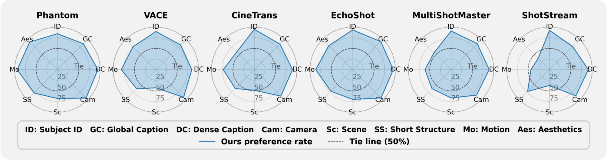

🎬 Entity-level Cinematic Control
Each entry pairs the generated video with its entity-centric conditioning prompt. The timeline below each video shows per-entity dense-caption bars (one row per entity), a shared playhead that tracks video progress, and pop-up captions that appear as each event plays. Click any bar or track region to seek to that moment.
📜 Abstract
Cinematic video depicts multiple subjects acting or interacting at specific moments, captured with deliberate camera movement, and stitched together by shot transitions. Together, these elements demand a level of fine-grained control beyond current text-to-video models. Existing work addresses each axis in isolation: multi-subject personalization, temporal control, multi-shot synthesis, or camera control; no prior framework jointly integrates all four. We present CineOrchestra, a unified video diffusion model that controls subjects, events, cameras, and shot transitions simultaneously. Our key insight is that these heterogeneous cinematic elements share a fundamental structure: each is an entity acting over a specific temporal interval, which can therefore all be expressed through one shared structure of entity-centric conditioning primitives, augmented with reference images for visual entities. This formulation reduces the architectural challenge to a single positional-encoding problem, which we solve with two coordinated rotary embeddings: (i) an interval-sampled temporal RoPE that yields consistent attention behavior across events of dramatically varying duration, and (ii) a 2D entity-temporal cross-attention RoPE that disambiguates per-entity conditions and routes each to its corresponding spatiotemporal region. On two new benchmarks, CineOrchestra outperforms six per-axis specialists on dense caption following and shot-transition timing.
⚖️ Baseline Comparisons
CineOrchestra vs. prior methods — CineTrans, MultiShotMaster, Phantom, ShotStream, and VACE — on the same entity-centric prompt. Our result is highlighted with a purple border. The timeline below each entry shows all entity tracks. Click any bar to seek all videos simultaneously.
🎞️ Model Architecture
A single diffusion transformer ingests every cinematic ingredient through one shared entity-centric structure. Per-entity reference images, per-entity timed dense-caption events, the {camera} track, and the {transition} track flow into the same conditioning stream, then get routed to their spatiotemporal targets by two coordinated rotary embeddings: an interval-sampled temporal RoPE that keeps attention consistent across events with wildly varying duration, and a 2D entity-temporal cross-attention RoPE that disambiguates which entity each condition belongs to.

📊 User Study
Head-to-head human evaluation on 512 prompts, scored across eight independent dimensions. Each radar panel plots CineOrchestra's preference rate against one baseline among disagreeing votes (ties excluded); the dashed circle marks the 50% tie line — anywhere outside it favours CineOrchestra. We are preferred on every entity-, text-, and structure-related dimension — subject identity, global-description following, dense-caption following, and shot / camera structure — against all six baselines. Perceptual axes (raw motion, overall quality, scene look) come out roughly tied with the strongest perceptual specialist.

⏱️ Long-form Generation
The model is trained on 10-second clips, yet at inference it generalises directly to 40-second sequences — 4× longer than anything it ever saw at training time. Entity identity, scene grounding, camera primitives, and dense per-event timing all hold across the extended horizon with no fine-tuning or temporal extension trick. The timeline shows the full 40 s event schedule; axis ticks are spaced every 5 seconds.